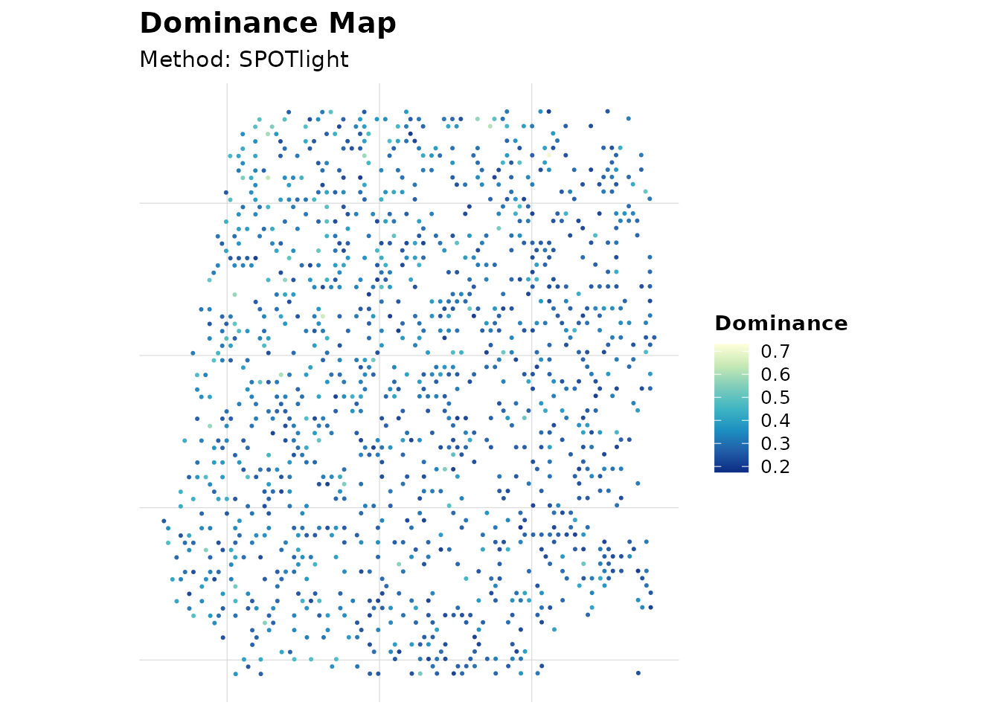
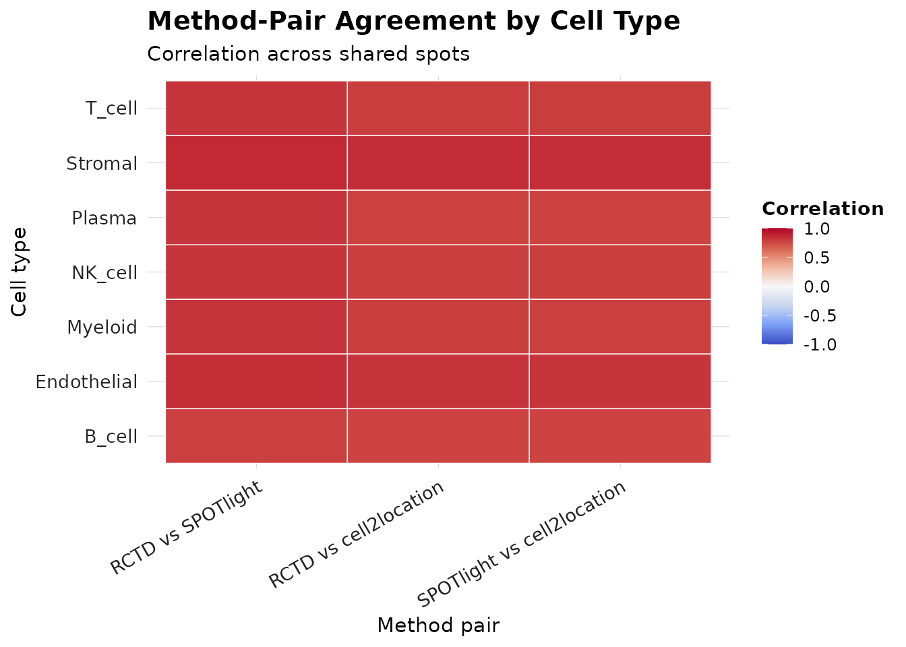
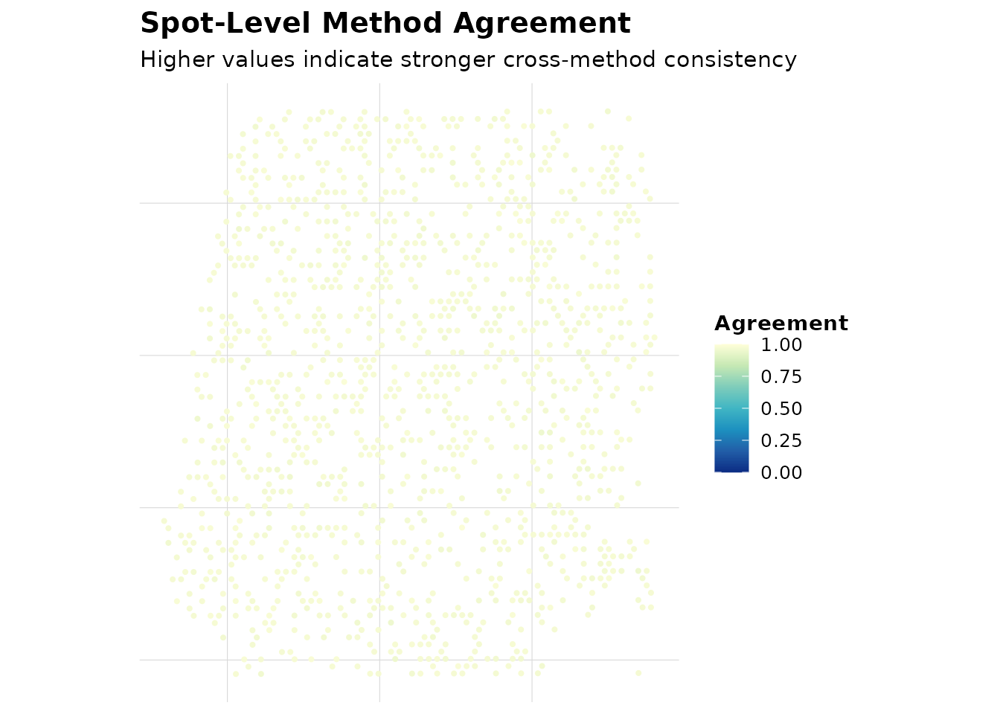
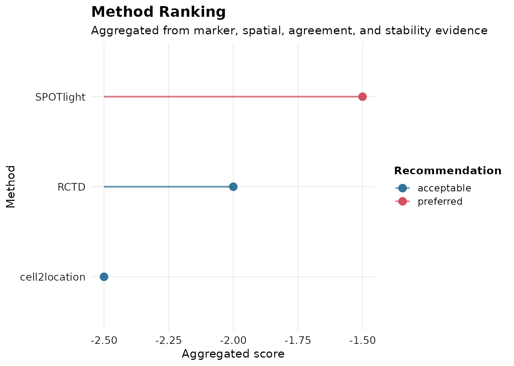
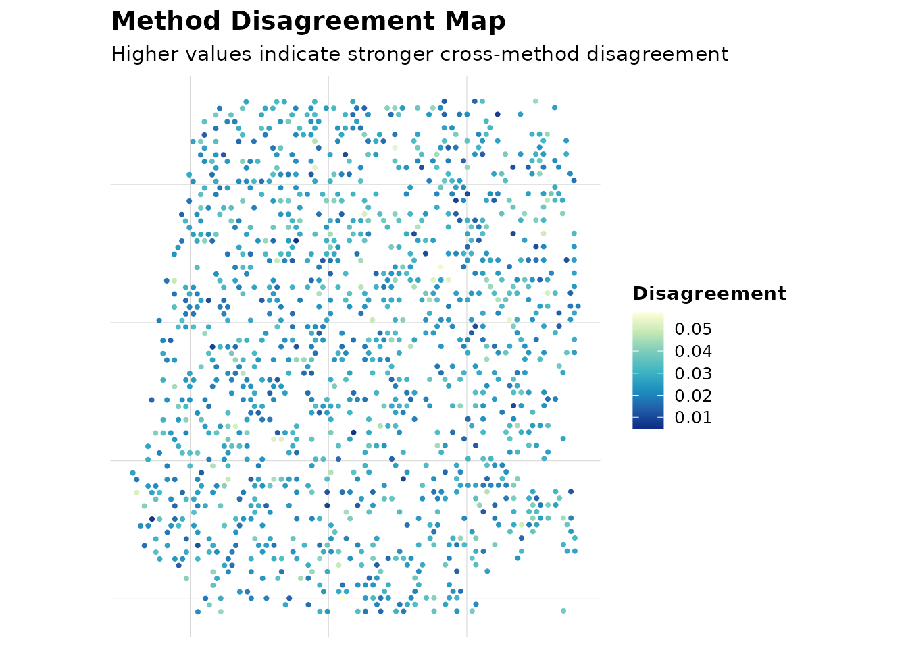
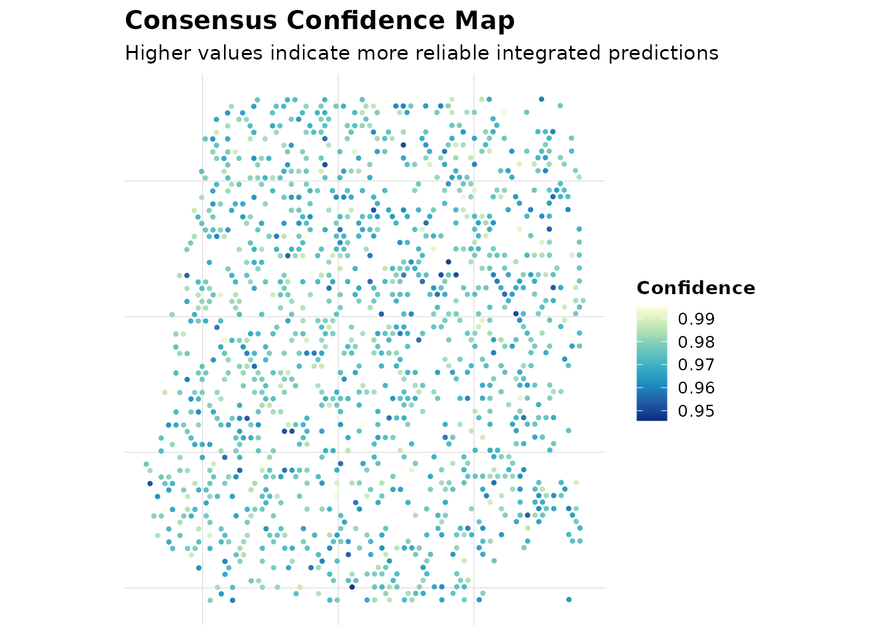

Step 1. Load data and markers
data("aegis_example", package = "AEGIS")
seu <- aegis_example
markers <- aegis_default_markers()Step 2. Simulate deconvolution outputs
deconv <- simulate_deconv_results(
seu,
methods = c("RCTD", "SPOTlight", "cell2location"),
seed = 2026
)
#> Loading required namespace: SeuratObjectStep 3. Run the core pipeline
obj <- run_aegis(seu, deconv = deconv, markers = markers)Step 4. Score and rank methods (RRA + mean-rank)
obj <- score_methods(obj)
obj_rra <- rank_methods(obj, method = "rra")
obj_meta <- rank_methods(obj, method = "mean_rank")
rra_cols <- intersect(
c("method", "overall_rank", "overall_score", "rra_pvalue", "aggregation_used", "recommendation"),
colnames(obj_rra$consensus$method_ranking)
)
meta_cols <- intersect(
c("method", "overall_rank", "overall_score", "aggregation_used", "recommendation"),
colnames(obj_meta$consensus$method_ranking)
)
knitr::kable(obj_rra$consensus$method_ranking[, rra_cols, drop = FALSE], digits = 4)| method | overall_rank | overall_score | rra_pvalue | aggregation_used | recommendation | |
|---|---|---|---|---|---|---|
| 2 | SPOTlight | 1.0 | 0.1023 | 0.7901 | rra | preferred |
| 1 | RCTD | 2.5 | 0.0000 | 1.0000 | rra | acceptable |
| 3 | cell2location | 2.5 | 0.0000 | 1.0000 | rra | acceptable |
knitr::kable(obj_meta$consensus$method_ranking[, meta_cols, drop = FALSE], digits = 4)| method | overall_rank | overall_score | aggregation_used | recommendation | |
|---|---|---|---|---|---|
| 2 | SPOTlight | 1.5 | -1.5 | mean_rank | preferred |
| 1 | RCTD | 2.0 | -2.0 | mean_rank | acceptable |
| 3 | cell2location | 2.5 | -2.5 | mean_rank | acceptable |
best_method <- obj_meta$consensus$method_ranking$method[[1]]
best_method
#> [1] "SPOTlight"Step 5. Build weighted consensus from top-ranked methods
obj_meta <- compute_consensus(obj_meta, strategy = "weighted", top_n = 2)
obj_meta$consensus$result$methods_used
#> [1] "SPOTlight" "RCTD"Step 6. Visualize audits and consensus
plot_audit(obj_meta, type = "dominance", method = best_method)
plot_compare(obj_meta, type = "heatmap")
plot_compare(obj_meta, type = "spot_agreement")
plot_compare(obj_meta, type = "consensus_map")
plot_method_ranking(obj_meta)
plot_disagreement_map(obj_meta)
plot_consensus_confidence(obj_meta)
Step 7. Generate report
render_report(obj_meta, output_file = "aegis_quick_start_report.html")This quick start shows the minimum workflow from input data to ranking and consensus outputs.